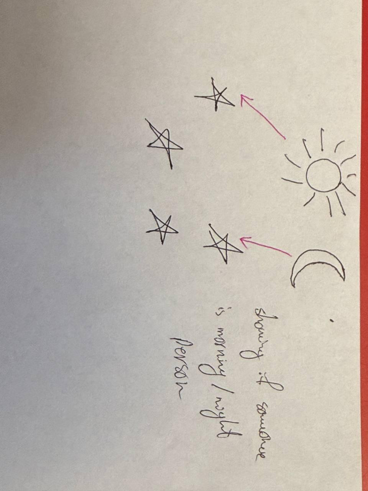
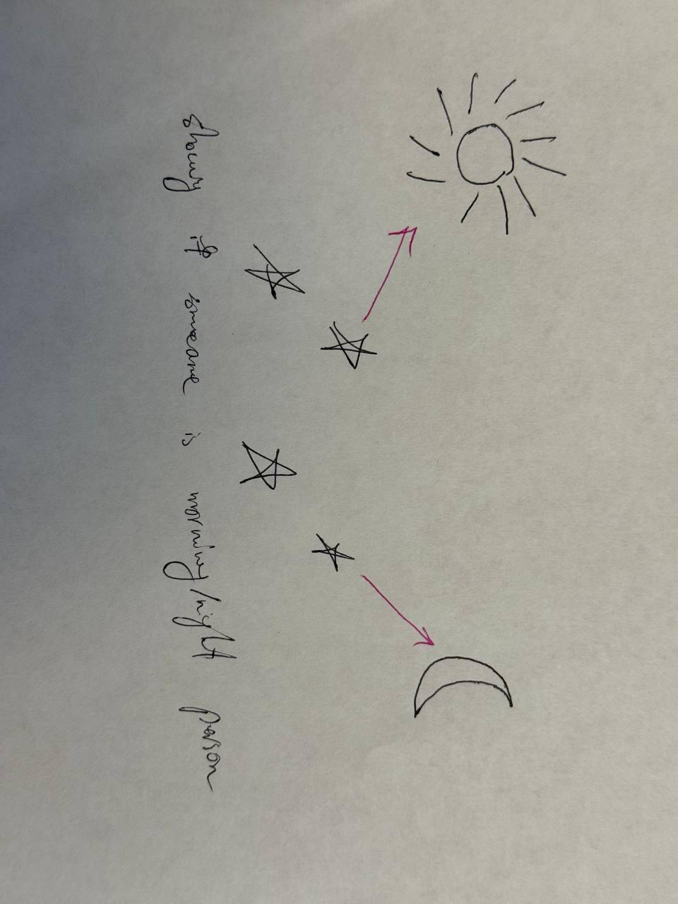
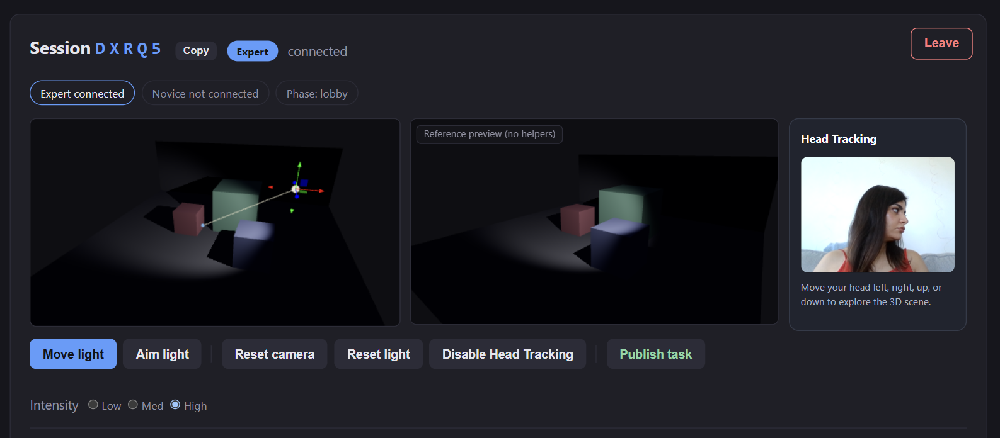
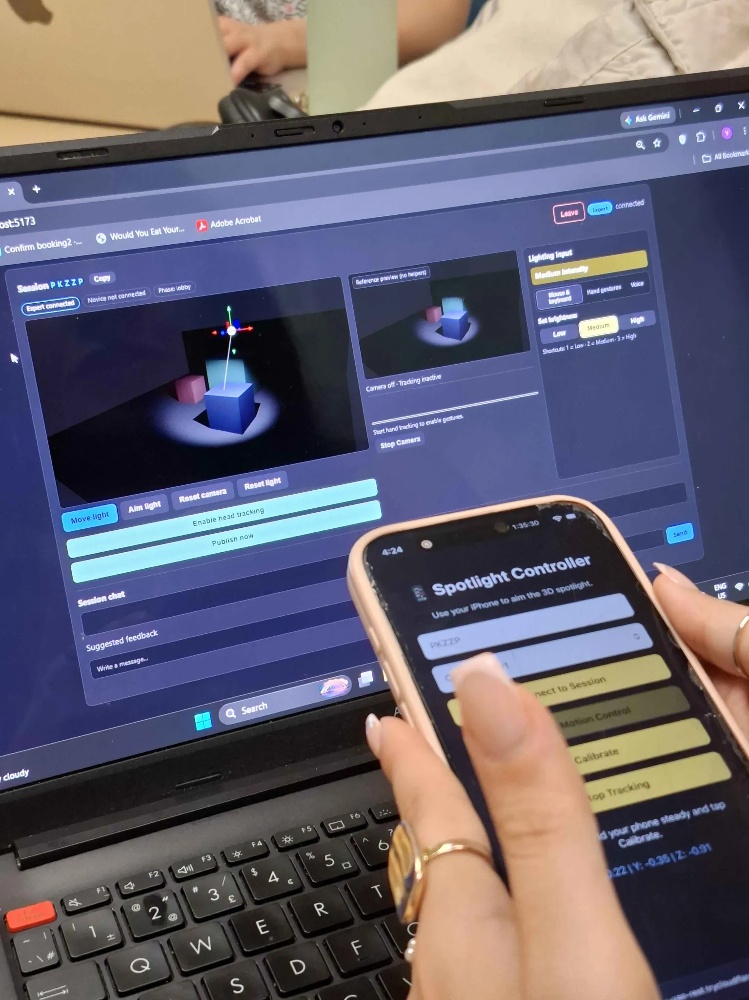
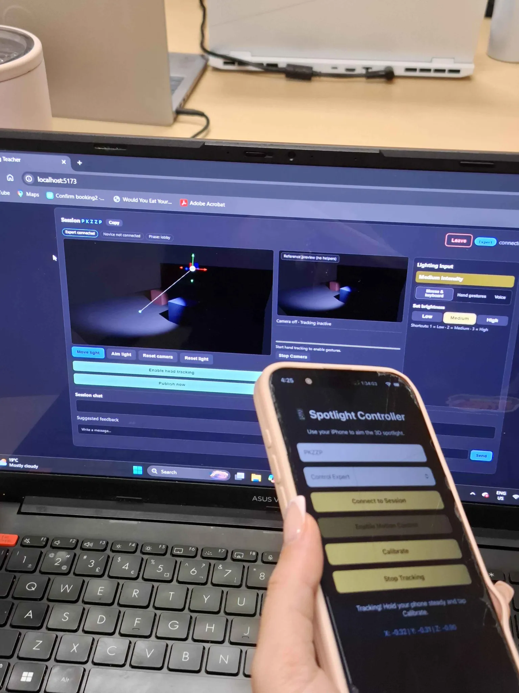
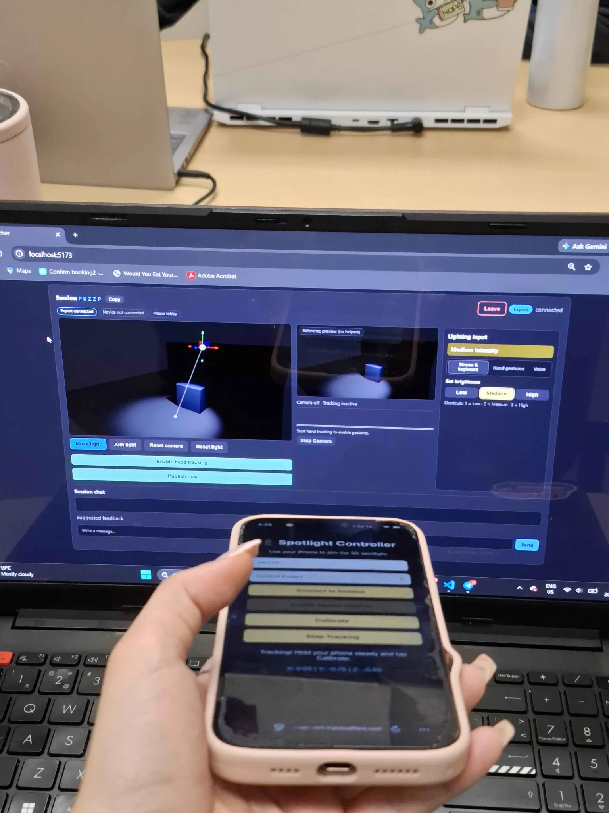
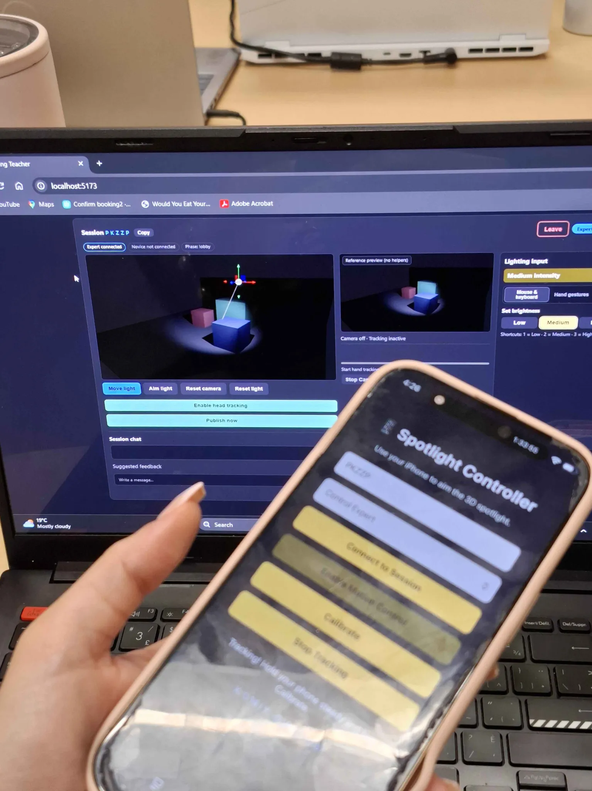

CPSC 581 · Individual design portfolio
Yasmin
Semsar
I design interactions that make the next move feel natural.
Computer science student at the University of Calgary. I use sketches, code, and prototypes to explore how people discover what an interface can do.
Explore my projectsCourse projects
My role, design decisions, and what I learned.
Project 1 · Team Constellation
Four controls, two ways to discover a connection
My role
I proposed connecting members to reveal shared interests and a caption to explain what they had in common. I implemented much of the star-connection and shared-hobby behavior. The star metaphor came from a teammate and the visual design was collaborative.
What changed
My first sun-and-moon idea added two draggable controls. After the TA clarified the four-button requirement, I changed the sun and moon into fixed targets and made the existing member stars move toward them. The personality reveal stayed discoverable and the same four controls did more.


These drawings retrospectively explain the two concepts.
Open the team prototype ↗Project 2 · Lighting Teacher · Expertise Sharing
Exploring a lighting scene through movement
Lighting Teacher is a shared browser workspace where an expert sets a lighting reference and a novice tries to reproduce it. The team prototype combines a Three.js scene, live sessions, embodied controls, chat, and feedback.
My contribution
I implemented webcam head tracking for the 3D scene, adding the tracking logic in headTracking.ts and connecting it to the camera in scene.ts. Moving sideways or up and down changes the viewpoint so the user can inspect the relationship between the light and the objects.
From a subtle effect to visible feedback
In initial testing, the camera movement was too subtle to notice. I increased the camera-offset sensitivity and tested it again, making the perspective change more apparent. Movement is measured relative to a neutral head position and smoothed to reduce jitter.

- EnableStart tracking and allow webcam access.
- CalibrateLook straight ahead to establish a neutral position.
- ExploreMove your head to shift the viewpoint.
- DisableReturn to normal camera navigation.
Why this input?
Head movement lets the learner explore the scene while keeping lighting controls available. Conventional mouse navigation remains available for precision. This is a camera-offset interaction, rather than full six-degree-of-freedom tracking or physically accurate perspective correction.
What the evidence shows
The screenshots document the neutral and shifted viewpoints in the working prototype. Development checks covered webcam permission, calibration, camera response, and disabling tracking. These were iterative functional checks; we did not conduct a formal learning-outcome study. Lighting, camera placement, and face visibility can affect tracking.
Another embodied input in the team prototype
The final project also uses a calibrated iPhone controller to aim the spotlight. Phone orientation is sent to the desktop session, where the virtual light changes direction. The team revised the initial tilt mapping after testing revealed reversed or weak responses, using orientation relative to the calibrated reference instead.




My implementation history 9712312 initial webcam tracking · 07a39ad scene integration
Project 3 · Pass It On
Making a shared bite visible
My role
I implemented the shared-bite glow and its Wokwi wiring. In solo mode, one bowl lift triggers a warm pulse. In group mode, two bowls lifted less than 20 seconds apart trigger a pulse. The LED then returns to the companion lighting.
What I verified
In the integrated Wokwi prototype, lifting bowl A triggered Solo glow. In group mode, two lifts 8.018 seconds apart triggered Shared glow. The companion also registered the lifts and updated its pace.
About me
How I approach design
I like interfaces that let people discover information through action. In Team Constellation, dragging or connecting stars revealed something about the people they represented. In Expertise Sharing, looking straight ahead gave users a starting point for exploring with head movement.
Across these projects, I learned to prototype the feedback as carefully as the input. Next time, I’d sketch more alternatives before coding and keep a dated record of what changed and why.